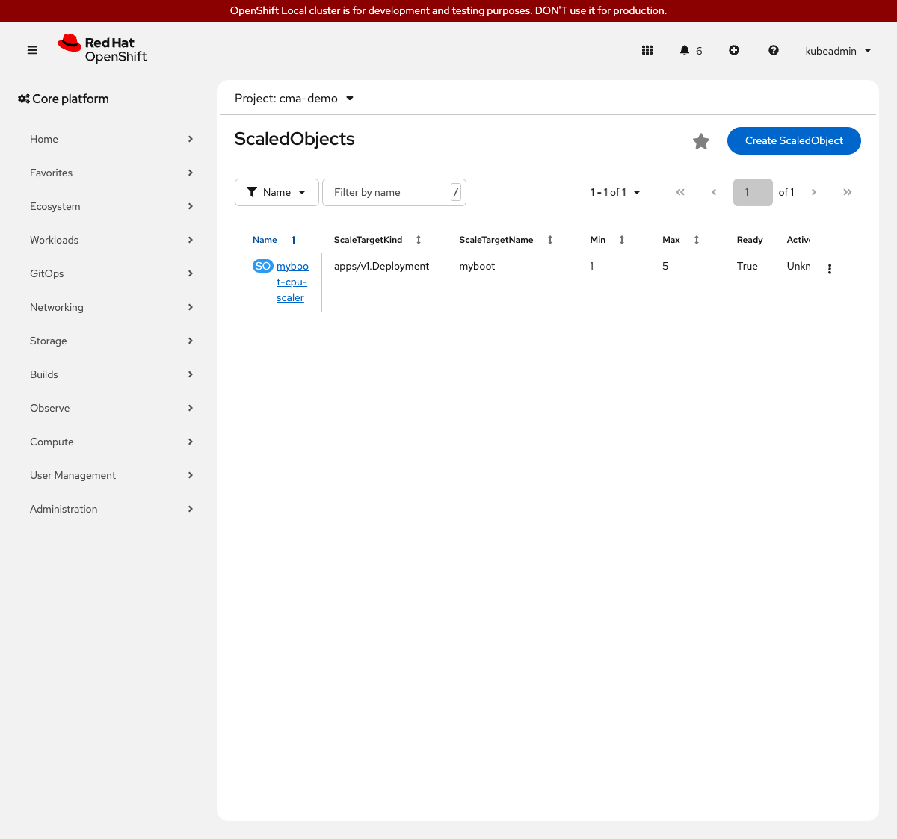

Custom Metrics Autoscaler on OpenShift Local
This step replaces the fixed replica count from step 01 with a ScaledObject that scales the myboot deployment between 1 and 5 replicas when average CPU utilization crosses 50% of the requested limit.
Prerequisites
-
Step 01 complete:
mybootdeployment running with 2 replicas -
ocCLI authenticated as cluster-admin -
Custom Metrics Autoscaler operator installed and
KedaControllerrunning inopenshift-keda
How It Works
The ScaledObject resource links KEDA to a Deployment and defines when to scale it. For the CPU trigger, KEDA reads the standard Kubernetes CPU metrics API and computes average utilization across all running pods. When that average exceeds the configured threshold for two consecutive polling intervals, KEDA adds a replica.
The cooldownPeriod (30 seconds here) is the minimum time KEDA waits after the last scale event before scaling back down. This prevents rapid replica oscillation when load is uneven.
The stabilizationWindowSeconds: 60 under spec.advanced.horizontalPodAutoscalerConfig.behavior.scaleDown overrides the HPA default and tells the HPA to consider only the last 60 seconds of replica-count samples when deciding whether to scale down.
| The default HPA scale-down stabilization window is 300 seconds (5 minutes). This workshop sets it to 60 seconds so participants can observe scale-down within a reasonable session window. Production workloads should keep the default 300-second window, or tune it to match the expected traffic pattern. |
Steps to Apply
1. Remove the fixed replica count
What: Remove the replicas field from the Deployment so that KEDA fully controls the count.
Why: If both the Deployment and a ScaledObject specify a replica count, the Deployment spec wins on the next rollout and overrides KEDA. Removing it lets KEDA own the field.
oc patch deployment myboot -n cma-demo \
--type=json \
-p='[{"op":"remove","path":"/spec/replicas"}]' \
--context crcdeployment.apps/myboot patchedoc get deployment myboot -n cma-demo -o jsonpath='{.spec.replicas}' --context crc1
Kubernetes defaults spec.replicas to 1 when the field is removed. The important outcome is that the HPA created by KEDA will own the replica count going forward - not the Deployment spec.
|
2. Create the CPU-based ScaledObject
What: Apply the ScaledObject manifest that triggers scaling at 50% CPU utilization.
Why: The ScaledObject links the KEDA scaler to the myboot Deployment. KEDA creates and manages an HPA under the hood, so you interact with ScaledObject rather than editing the HPA directly.
oc apply -f 02-cpu-trigger/scaledobject.yaml --context crcscaledobject.keda.sh/myboot-cpu-scaler createdoc get scaledobject myboot-cpu-scaler -n cma-demo --context crcNAME SCALETARGETKIND SCALETARGETNAME MIN MAX TRIGGERS READY ACTIVE FALLBACK AGE
myboot-cpu-scaler apps/v1.Deployment myboot 1 5 cpu True False False 15soc get hpa -n cma-demo --context crcNAME REFERENCE TARGETS MINPODS MAXPODS REPLICAS AGE
keda-hpa-myboot-cpu-scaler Deployment/myboot 2%/50% 1 5 1 20s3. Generate CPU load and observe scaling
~3.5 minutes total (Job runs 120 s; scale-up fires in ~90 s; scale-down takes ~90 s after load stops)
What: Run the load-generating Job, which sends a continuous stream of HTTP requests to myboot from inside the cluster.
Why: The Job runs inside the cluster to avoid external network latency and produce more consistent load than curl from a laptop. After the Job finishes, CPU drops below the threshold and KEDA scales back down.
oc apply -f 02-cpu-trigger/load-job.yaml --context crcIn a second terminal, watch the replica count:
watch oc get pods -n cma-demo -l app=myboot --context crc
On CRC, the single-node VM may not produce as sharp a CPU spike as a multi-node cluster. If replicas do not increase, check the HPA target CPU with oc describe hpa keda-hpa-myboot-cpu-scaler -n cma-demo --context crc and confirm current utilization is above 50%.
|
oc get scaledobject myboot-cpu-scaler -n cma-demo --context crcNAME ... READY ACTIVE FALLBACK AGE
myboot-cpu-scaler ... True True False 3mACTIVE: True means KEDA has at least one active trigger and has scaled above the minimum.

What This Solves (Compared to Step 01)
| Problem from Step 01 | How This Step Solves It |
|---|---|
Replicas fixed at 2 regardless of load |
KEDA scales between 1 and 5 replicas based on CPU utilization |
No path to scale-to-zero |
|
What This Does NOT Solve (Yet)
| Remaining Problem | Addressed In |
|---|---|
CPU utilization is a proxy for load, not a direct measure of application demand |
|
Scaling does not reflect the application’s HTTP request rate |
Alternatives Considered
| Approach | Notes |
|---|---|
Use a plain Kubernetes HPA |
A plain HPA works for CPU and memory. The |
Set |
Scale-to-zero removes all pods when idle. For a demo with a Route, this causes a cold-start delay on the next request. |
Reset
The KEDA-managed HPA is deleted automatically when the ScaledObject is deleted. After resetting, restore the replica count on the Deployment so step 01 is back to its baseline state.
oc delete scaledobject myboot-cpu-scaler -n cma-demo --ignore-not-found --context crc
oc delete job myboot-load -n cma-demo --ignore-not-found --context crc
oc scale deployment myboot --replicas=2 -n cma-demo --context crc
oc wait --for=condition=available deployment/myboot -n cma-demo \
--timeout=120s --context crc